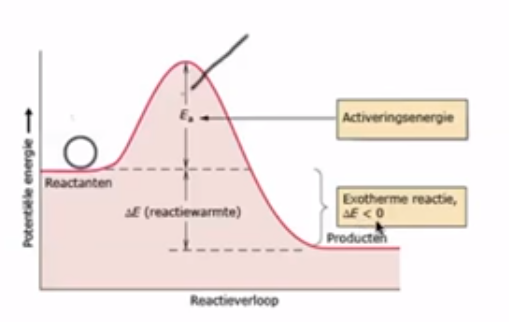
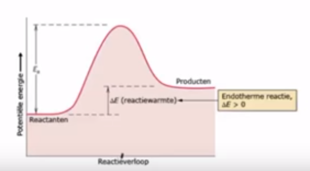

Chemische Reacties
Om verbindingen te scheiden maakt men gebruik van chemische eigenschappen. Deze scheidingsmethode vindt altijd plaats met behulp van chemische reacties. Een chemische reactie ontstaat als beginstoffen of reactanten worden gemengd, onder bepaalde condities, die leidt tot de vorming van nieuwe stoffen, de reactieproducten. Als we natrium mengen met een zoutzuur oplossing ontstaat een chemische reactie. We zien de vorming van een ontbrandbaar gas, en als we de oplossing daarna indampen blijft een stof over die we keukenzout noemen. De beginstoffen zijn verdwenen. Keukenzout heeft geheel andere eigenschappen dan de beginstoffen natrium en zoutzuur. Dit is kenmerkend voor een chemische reactie: er ontstaan nieuwe stoffen met unieke eigenschappen. Het plaatsvinden van een reactie is te herkennen aan typische reactieverschijnselen zoals: kleurverandering, gasbelletjes in een oplossing, geluid, lichtflits, vuur, rook, warmte en geur. We onderscheiden een paar reactiesoorten:- ontledingsreacties: een chemische reactie waarbij elementen of verbindingen uit een samengestelde stof worden teruggewonnen
- synthesereacties: een chemische reactie waarbij uit de beginstoffen geheel nieuw stoffen worden gemaakt
- vaste stof: (s)olid
- vloeistof: (l)iquid
- opgelost in water: (aq)ueous
- gas: (g)as
Aantoningsreacties
Chemische reacties worden soms gebruikt om aan te tonen dat een bepaalde stof aanwezig is. Dit noemen we aantoningsreacties.| Stof | Reagens | Waarneming |
|---|---|---|
| koolstofdioxixe | helder kalkwater | troebel kalkwater |
| water | wit kopersulfaat | wit kopersulfaat wordt blauw |
| suiker | Haines | troebel oranje |
| jood (aq) | zetmeel (stijfsel) | donkerblauw |
| zwaveldioxide | broomwater joodwater | gelige water ontkleurt |
| suiker | Haines | troebel oranje |
| onverzadigde koolwaterstoffen | Hbroomwater joodwater | gelige water ontkleurt |
| zuurstof(g) | gloeiende houtspaander | houtspaander licht op |
| waterstof(g) | vlammetje | knal |
Exotherme en Endotherme Reacties
De atomen worden in een verbinding bij elkaar gehouden door de bindingsenergie in de stof. Bij een ontledingsreactie moet altijd energie worden toegevoegd om deze verbindingen te verbreken. Dit kan door warmte (thermolyse), stroom (electrolyse) of licht (photolyse). Als de verbindingen verbroken worden dan komt de bindingsenergie in de vorm van warmte vrij. Reacties waar energie vrijkomt, bijvoorbeeld een verbrandingsreactie, worden exotherme reacties genoemd. Als een reactie energie opneemt spreekt men van een endotherme reactie. Om te smelten neemt de stof warmte uit de omgeving op. Het is een endotherme reactie. Het energieverloop van een chemische reactie wordt weergegeven in een energiediagram. Om een chemische reactie te laten plaatsvinden is altijd een hoeveelheid activeringsenergie nodig. Bij een exotherme reactie zal het energieniveau van de producten altijd lager liggen dan van de beginstoffen. Het verschil hiertussen is de reactie-energie die is vrijgegeven aan de omgeving. Bij een endotherme reactie zal het energieniveau van de producten lager liggen dan van de beginstoffen. De producten hebben de reactie-energie opgenomen uit de omgeving. De reactie-energie is meestal in de vorm van warmte. We spreken dan van reactiewarmte. In hierna volgende figuren wordt dit schematisch getoond.   De reactiewarmte, $\Delta E$, uitgedrukt in Joule per mol, die ontstaat om uit enkelvoudige verbindingen een samengestelde verbinding te vormen wordt vormingswarmte genoemd. Deze staan in BINAS57 voor een aantal stoffen vermeld. Als $\Delta E<0$ is er sprake van een exotherme reactie en anders van een endotherme reactie. De reactiewarmte om uit een samengestelde stof enkelvoudige stoffen te verkrijgen heet ontledingswarmte en is even groot maar tegengesteld als de vormingswarmte voor dezelfde stoffen. Met de vormingswarmte voor stoffen kunnen we de reactiewarmte van een chemische reactie berekenen door: \[ \Delta E_{\text{reactie}} = \Delta E_{\text{producten}} - \Delta E_{\text{beginstoffen}} \] Laten we als voorbeeld de verbranding van 1 mol methaan bekijken. \[ \ce{CH4(g) + 2O2(g) -> CO2(g) + 2H2O(l)} \] Voor het bepalen van de vormingswarmte van de beginstoffen moeten we alleen de vormingswarmte van de samengestelde stoffen bepalen. In dit geval dus $\ce{CH4(g)}$. In BINAS57 vinden we hiervoor $-0.76\times 10^5$. We doen hetzelfde voor de vormingswarmte van de samengestelde stoffen in de producten. Voor $\ce{CO2(g)}$ vinden we $-3.935\times 10^5$ en voor $\ce{ 2H2O(l)}$ verkrijgen we $2\times -2.42\times 10^5$. Dit geeft: \[ \Delta E_{\text{reactie}} = (2 \times -2.42 - 3.935 - -0.76)\times 10^5= -8.7\times 10^5 J \]Reactiesnelheid
Reacties tussen deeltjes vinden plaats tijdens een botsing van de deeltjes. Niet alle botsingen leiden tot een reactie. Botsingen die tot een reactie leiden noemen we effectieve botsingen. De reactiesnelheid, $s$, is het aantal mol van een stof die per seconde per liter verdwijnt of ontstaat: $\text{mol}\cdot s^{-1}\cdot L^{-1}$. De beginstoffen verdwijnen en de producten ontstaan. In het begin van een reactie, als er nog veel beginstoffen aanwezig zijn, zal de reactiesnelheid in het algemeen hoger liggen dan na verloop van tijd. De reactiesnelheid wordt beïnvloedt door een aantal factoren:- soort stof: het verschil in elektronnegativiteit tussen twee stoffen bepaalt in belangrijke mate of de stoffen met elkaar reageren (aan elkaar kleven) of niet
- verdelingsgraad: voor vaste stoffen geldt dat naarmate de verdelingsgraad groter is er sprake zal zijn van een groter oppervlak en er per tijdseenheid meet botsingen met de deeltjes van de stof kunnen plaatsvinden en dus meer effectieve botsingen en daarmee een hogere reactiesnelheid
- concentratie: naarmate meer deeltjes per volume-eenheid aanwezig zijn, zullen er meer botsingen per tijdseenheid plaatsvinden en dus meer effectieve botsingen en dus een hogere reactiesnelheid. De concentratie verandering komt overeen met een druk verandering.
- temperatuur: naarmate de temperatuur hoger is zal de snelheid van de deeltjes toenemen en dus zullen ze harder botsen waardoor meer effectieve botsingen optreden en dus een hogere reactiesnelheid
- katalysator: een katalysator is een stof die de reactie snelheid verhoogt maar zelf niet verbruikt wordt in de reactie. Bijvoorbeeld een enzym is een katalysator in de cel.
Evenwichten
Er zijn nu twee soorten reacties.- Aflopende reacties, $\ce{->}$: waarbij tenminste één van de beginstoffen volledig wordt omgezet in producten
- Evenwichtreacties,$\ce{<=>}$: waarbij de reactie in beide richtingen verloopt. Na verloop van tijd zal de reactiesnelheid in beide richtingen even groot zijn, zodat de concentraties van alle aanwezige stoffen niet meer veranderd. Er is dus een dynamische evenwicht bereikt. Afhankelijk van de hoogte van de concentraties van de stoffen spreekt men over de ligging van het evenwicht: een evenwicht naar rechts, links of in het midden.
- homogeen: alle stoffen in de evenwichtsreactie zijn van dezelfde fase
- heterogeen: de stoffen in de evenwichtsreactie zijn van verschillende fase
- verdelingsevenwicht: het evenwicht bestaat uit een verdeling tussen twee stoffen, bijvoorbeeld prik in een flesje cola, $\ce{CO2(aq) <=> CO2(g)}$
Verschuiven van Evenwichten
Als een evenwicht is bereikt kan men dit evenwicht verstoren door een of meer van de volgende omstandigheden:- verandering van het volume
- toevoegen of verwijderen van stoffen
- temperatuur veranderen